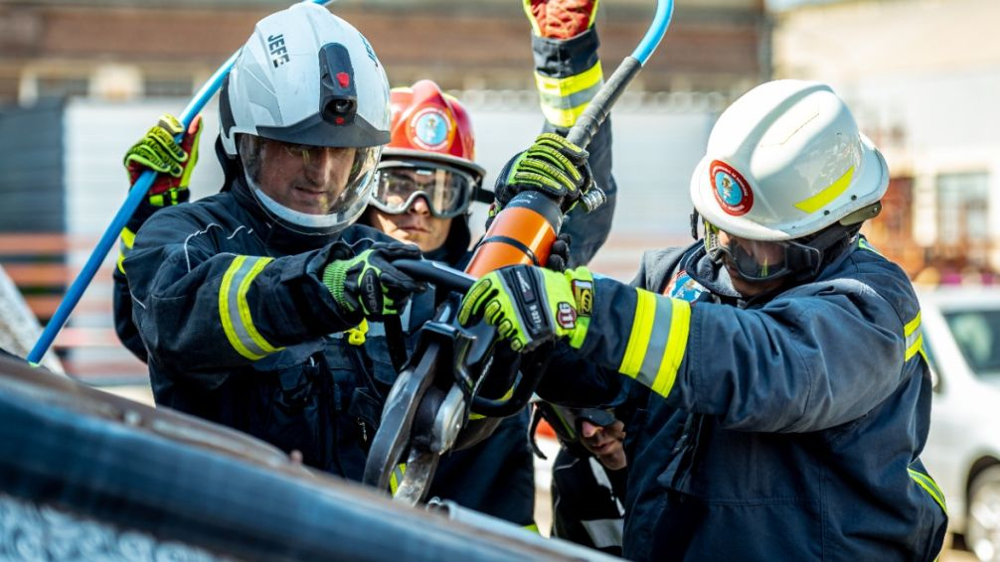

NUESTRA HISTORIA
La Federación de Bomberos Voluntarios de la Provincia de Buenos Aires trabaja junto a asociaciones de todo el territorio provincial promoviendo la capacitación, el crecimiento institucional y el fortalecimiento del sistema bomberil.
Nuestro compromiso es acompañar el desarrollo de los cuarteles y brindar herramientas para que cada bombero voluntario pueda desempeñar su labor de manera profesional, segura y eficiente.
¿POR QUÉ FORMAR PARTE?
Ser bombero voluntario implica asumir un compromiso con la comunidad, capacitarse constantemente y trabajar en equipo para brindar ayuda en situaciones de emergencia.
Si tenés vocación de servicio y ganas de colaborar con quienes más lo necesitan, te invitamos a completar el siguiente formulario.
CAPACITACIÓN Y TRABAJO EN EQUIPO
